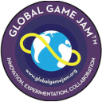

1Ела и научи
2Сформирай екип
3Направи игра!
1 тема
~ 45 часа
~ 28 000 участника от 78 страни (2015)
Регистрирай се за участие още сега!
Какво е Burgas Game Jam
Burgas Game Jam е 48 часов хакатон за правене на игри.
Случва се в рамките на 3 дни.
Част e от глобалната инициатива Global Game Jam.

Организатор:
Правила
На 23ти януари ела в Казиното в 13:30, за да се запознаеш с останалите game ентусиасти в Бургас, откриеш твоя екип и заедно направите игра за 48 часа!
Участието е безплатно и всички са добре дошли - програмисти, дизайнери, артисти, геймъри, game ентусиасти, любители и професионалисти.
Минимална възраст: 12+